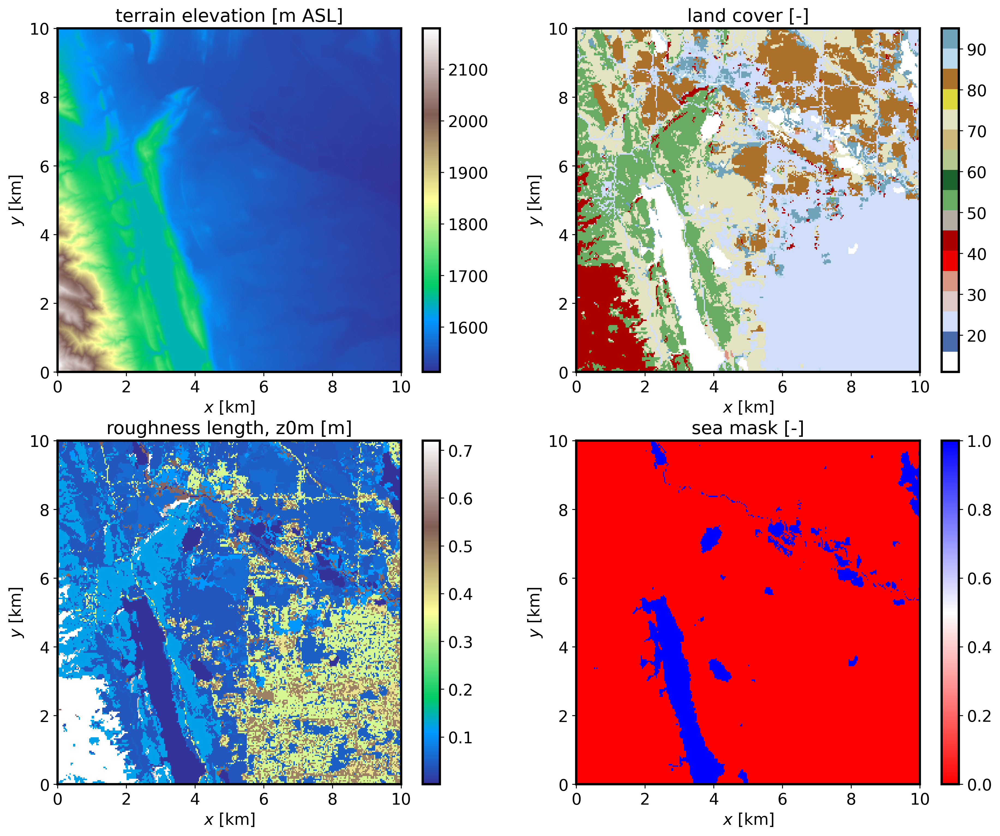
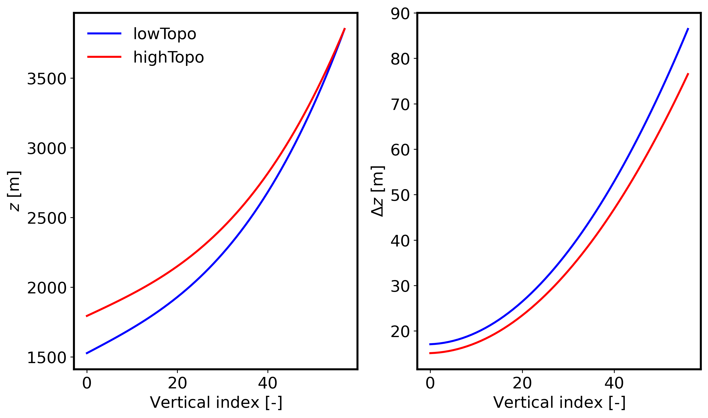

4.1. Setting up a real-world downscaled simulation
This is an example of a dynamically downscaled FastEddy simulation over Fort Collins (CO) driven by WRF simulated mesoscale weather conditions. This tutorial introduces the 3 preprocessing steps required to run mesoscale coupled real cases: GeoSpec, SimGrid, and GenICBCs, all of which are implemented using Python scripts (scripts/python_utilities/coupler/). The required datasets to run this tutorial are provided at this Zenodo record.
4.1.1. GeoSpec
The first preprocessing step is GeoSpec.py. The purpose of this step is to create a NetCDF file of standard reference format from which one or more specific-resolution gridded FastEddy domain(s) can be created in the next step. The following variable dimensions and naming conventions are required in the GeoSpec.py input NetCDF file (see provided example input NetCDF file: ftCollins_inputs_gis.nc).
float x(x) ;
float y(y) ;
float elevation(y, x) ;
double lat(y, x) ;
double lon(y, x) ;
int LandCover(y, x) ;
float cellsize ;
Two required fields from an external GIS source are the terrain topography (elevation, in m above seal level) and the categorical land cover (LandCover). Note that high-resolution fields are desirable as inputs. Terrain can usually be obtained from lidar data at a few meters resolution, while land cover datasets are typically coarser. For U.S. locations we recommend using National Land Cover Database (NLCD) dataset that comes at a high resolution of 30 m. The input NetCDF file should also include the corresponding latitude and longitude 2d fields (lat and lon) provided as double precision due to the high-resolution typically used in these FastEddy simulations. All fields must be projected consistently and discretized in the projected coordinate frame at the same resolution (cellsize, in m).
Input parameters to GeoSpec.py are specified in the geospec.json file. These include the path and file name of the input GIS data (gis_root and gis_file, respectively), along with other parameters including the output path of the standard format, reference NetCDF output file of this step (FE_dataset_path). In order to convert the land cover class into a roughness length value, a look-up table must be provided (nlcd_name). In this tutorial, a lookup table is provided based on the 16-class NLCD dataset (LandCoverMetadata_NLCD16.csv). Finally, the JSON file entry water_cats needs to list all of the land cover categories that correspond to water bodies, so an appropriate roughness length parameterization can be used by FastEddy. Once all the required input files are ready, GeoSpec.py can be executed:
python ./GeoSpec.py -f geospec.json
After successful completion, a NetCDF file (FortCollinsCO.nc) with the following fields will be created:
float xPos2d(yIndex, xIndex) ;
float yPos2d(yIndex, xIndex) ;
float topoPos(yIndex, xIndex) ;
int LandCover(yIndex, xIndex) ;
float z0m(yIndex, xIndex) ;
float z0t(yIndex, xIndex) ;
float SeaMask(yIndex, xIndex) ;
float dx_inter ;
float dy_inter ;
double lat(yIndex, xIndex) ;
double lon(yIndex, xIndex) ;
If the JSON file option save_plot_opt is set to 1, then a plot will be produced displaying the terrain elevation, land cover, roughness length, and sea mask (water body) maps.
{kind=link}

Note
All three preprocessing steps make use of functions defined in couplingUtils.py. This file either needs to be present in the same directory as the preprocessing Python scripts or alternatively the location of couplingUtils.py must be included in your PYTHONPATH (e.g. using sys.path.append).
The input GIS data should be projected consistently with the WRF mesoscale data that will be used to provide initial and boundary conditions.
Optionally (
gis_opt = 1), the user can point to a WRF restart file, inheriting the WRF domain georeference specification as an alternative to providing the standard GIS-derived input file to GeoSpec.py. A WRF output file can also be used, but it needs to include the variable ZNT (roughness length) not present by default in WRF output files.
4.1.2. SimGrid
The second preprocessing step is SimGrid.py. The purpose of this step is to set up a FastEddy grid over a domain located within the area covered by the GIS file generated with GeoSpec.py. The location of the center of the FastEddy domain is specified in the simgrid.json file by the parameters center_lat and center_lon. The number of points in each direction (Nx, Ny, Nz), grid spacings (d_xi, d_eta, d_zeta), and vertical stretching parameters (verticalDeformFactor, verticalDeformQuadCoeff) required to set up a grid are read in from a FastEddy parameters file (FE_params_file). SimGrid.py performs decimation or interpolation between the GeoSpec.py output reference resolution and the parameter-specified grid spacing of the target FastEddy domain for surface fields, in addition to establishing a terrain following vertical coordinate grid. Once all the required input files are ready, SimGrid.py can be executed:
python ./SimGrid.py -f simgrid.json
After successful completion, a NetCDF file (FortCollinsCO.0) with the following fields will be created:
float xPos(zIndex, yIndex, xIndex) ;
float yPos(zIndex, yIndex, xIndex) ;
float zPos(zIndex, yIndex, xIndex) ;
float topoPos(yIndex, xIndex) ;
float z0m(yIndex, xIndex) ;
float z0t(yIndex, xIndex) ;
float SeaMask(yIndex, xIndex) ;
int LandCover(yIndex, xIndex) ;
double lat(yIndex, xIndex) ;
double lon(yIndex, xIndex) ;
int xIndex(xIndex) ;
int yIndex(yIndex) ;
int zIndex(zIndex) ;
A binary file containing the terrain elevation information will also be generated (FortCollinsCO_Topography_448x450.dat) and should be included as the topoFile entry of the FastEddy input parameters file. If the JSON file option save_plot_opt is set to 1, then a plot will be produced displaying the vertical distribution of height and grid spacing at the lowest and highest terrain elevation points in the domain:
{kind=link}

Note
Keep in mind that the highest elevation locations will exhibit the largest grid compression, resulting in the smallest surface grid spacings. You may need to adjust the vertical stretching parameters in the FastEddy input file and rerun SimGrid.py until the minimum desired surface grid spacing is achieved. The standard output logging generated during the execution of SimGrid.py can be useful for that purpose.
Remember to adjust the FastEddy timestep size parameter
dtcommensurately with the minimum grid spacing over the entire domain to ensure numerical stability of the simulation.
4.1.3. GenICBCs
The third preprocessing step is GenICBCs.py. The purpose of this step is to create initial and boundary conditions (ICBCs) from the mesoscale WRF simulation results specific to the domain created by SimGrid.py. The input parameters are specified in the corresponding genicbcs.json file. This step involves three-dimensional interpolation of prognostic equation variables (winds, density, potential temperature and water vapor) and two-dimensional interpolation of surface skin forcings (temperature and water vapor). In order for WRF to provide the required fields to drive a nested FastEddy simulation, a number of additional variables not present in WRF’s default output are required. To save the necessary variables at a sufficiently high temporal fidelity in an efficient manner, it is recommended to create WRF auxiliary files. For that purpose, when running WRF, include the following lines in WRF’s namelist.input.
&time_control
iofields_filename = "vars_io.txt",
ignore_iofields_warning = .true.,
auxhist14_outname = "wrf_fasteddy_d<domain>_<date>",
auxhist14_interval_m = 5,
frames_per_auxhist14 = 1,
io_form_auxhist14 = 2
And include the file vars_io.txt containing the one line below in WRF’s run directory.
+:h:14:PH,PHB,U,V,W,T,QVAPOR,QCLOUD,ALT,TSK,Q2,HGT,PSFC,XLAT,XLONG
With these additions, WRF will generate a set of timestamped wrf_fasteddy_ files that will be utilized as basis for the interpolation to the FastEddy grid. The rest of input parameters are meant to provide the starting date and time of the sequence of ICBCs to be created. Similar to the other preprocessing scripts, GenICBCs.py is executed as:
python ./GenICBCs.py -f genicbcs.json
Successful completion will create an initial condition file (FE_interp_170000UTC.0) and a set of boundary condition files (FE_Bndys.*) where the index indicates the number of second increments from the initial time (frequency in seconds is specified by the parameter secInc in genicbcs.json).